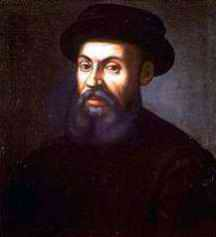

|
|
FERDINAND MAGELLAN 1480-1521
Penjelajah
Portugis Ferdinand Magellan diagungkan selaku pemuka
ekspedisi keliling jagad pertama. Ekspedisinya mungkin
merupakan perjalanan terhebat dalam sejarah umat manusia.
Jumlah lama seluruh perjalanan meliputi tiga tahun kurang
sedikit. Dari lima kapal ukuran kecil, yang lamban, yang
rapuh yang dipakai Magellan, cuma satu kapal yang mampu
kembali ke Eropa dengan selamat; dan dari 265 kelasi yang
ikut, cuma 18 yang pulang hidup! Magellan sendiri termasuk
salah sorang yang tewas dalam perjalanan (meskipun sesudah
dia melampaui saat-saat yang paling sulit dan berbahaya).
Tetapi pada akhirnya ekspedisi itu berhasil baik, dan
membawa bukti bahwa dunia ini memang betul-betul bundar.
Amatlah jelas, keberhasilan ekspedisi ini pada pokoknya
terkait dengan kepemimpinan Magellan dengan tekadnya yang
membaja. Banyak anak buahnya yang kepingin kembali sesudah
menempuh pelayaran hanya beberapa bulan, dan tentu saja
Magellan tak bisa tidak terpaksa menindas niat berontak
mereka dan bertekad terus melanjutkan niatnya. Gabungan
antara keahlian dan kemantapan tekad membuat dia dianggap
pelaut dan penjelajah terbesar dari semua pelaut, navigator
yang pernah ada.
Pengaruh sesungguhnya dari apa yang dicapainya sebetulnya
kecil. Orang-orang Eropa yang terpelajar sudah sama maklum
belaka memang bumi ini bulat, bukan persegi bukan gepeng dan
bukan pula seperti selembar papan. Dan rute yang ditempuh
Magellan bukan pula menjadi rute perjalanan perdagangan yang
penting. Tak seperti perjalanan Vasco da Gama, perjalanan
Magellan tidak punya pengaruh besar baik untuk Eropa maupun
Timur. Karena itu, kendati keberaniannya, kemasyhurannya,
tidaklah memadai masuk kelompok yang seratus.
|